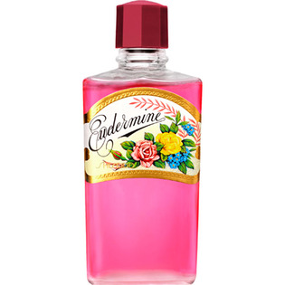

返回列表
产品名称：オイデルミン（N）

資生堂 オイデルミン（N） ２００ｍｌ
メーカー 資生堂
JANコード 4901872321001
商品の特徴
薄化粧や素肌のよごれをきれいに落とす、ふきとり用の化粧水です。
・肌をさっぱりさせ、なめらかにたもちます。
成分・分量
【成分】
水、変性アルコール、プロピレングリコール、グリセリン、オクチルドデセス－２０、クエン酸ナトリウム、エデト酸塩、クエン酸、パラベン、香料、赤色４０１号、黄色２０３号
用法及び用量
【使用方法】
・クレンジングクリームを使ったあとや、朝の簡単な洗顔にお使いください。
・コットンに適量を含ませ、ふくようにしてお使いください。